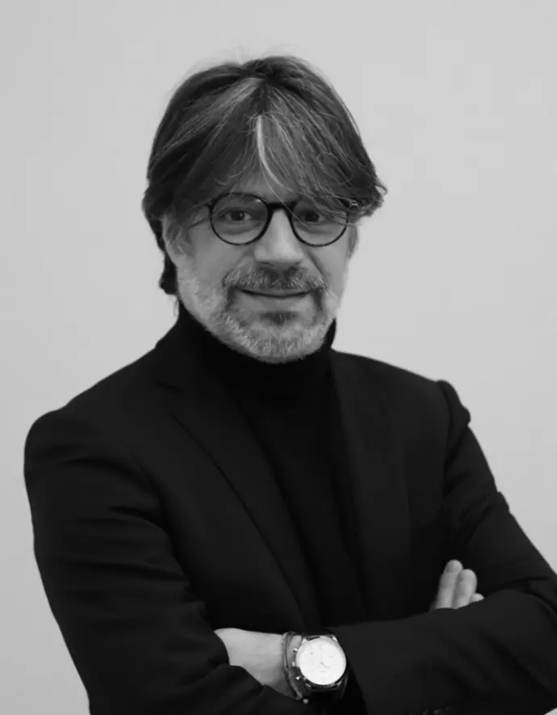
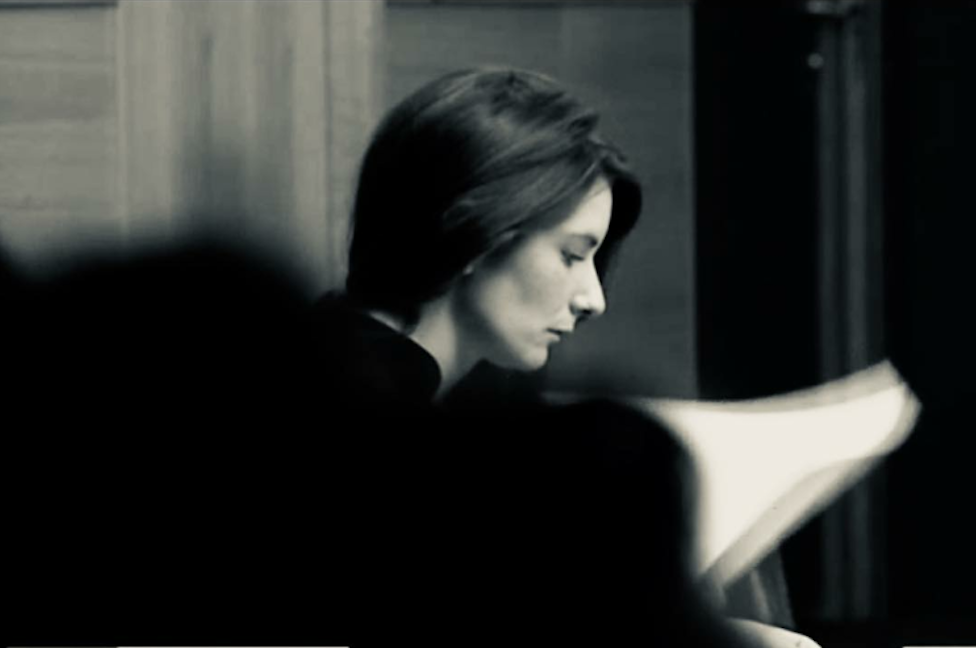

La création du cabinet C&S Avocats est l'aboutissement d'une collaboration professionnelle de sept années. Fondé le 1er janvier 2023, le cabinet réunit deux avocats aux valeurs communes et aux compétences complémentaires.

Associé fondateur · Avocat depuis 2007
Je ne me démarquerai pas de mes Confrères en confessant que ce sont les lectures des ouvrages de Robert BADINTER qui m'ont convaincu de vouloir défendre les gens, devenir Avocat.
Après un doctorat en droit de la famille, j'ai prêté serment en 2007.
Le hasard de la vie a voulu que j'apprenne mon métier auprès de Me Yves SAUVAYRE, l'un des pénalistes les plus inspirants que je pense connaître.
Il m'a appris mon métier, la valeur du combat et le rejet de l'injustice.
Pendant quatre années, j'ai eu l'honneur et la joie d'être son collaborateur, me permettant de me confronter à toutes les formes d'audiences, des faits qui semblent les plus graves, aux infractions considérées comme les plus anodines.
Je me suis installé avec une Consœur en 2011 à titre individuel.
Mon amour pour ce métier m'a conduit à m'investir auprès des confrères, notamment en enseignant au sein de l'École des Avocats, puis de devenir membre du Conseil de l'Ordre des Avocats de LYON en novembre 2022.
Madeleine COUSIN nous a rejoints en 2016 dans le cadre de ses stages professionnels puis en tant que collaboratrice.
Notre travail au quotidien nous a révélé que nous regardions dans les mêmes directions, guidés par les mêmes valeurs.
L'évidence a voulu que nous prenions la décision de nous associer afin de proposer à nos clients une défense forte, complémentaire et efficace.
C'est ce que nous nous évertuons à faire depuis le 1er janvier 2023.

Associée fondatrice · Avocate depuis 2017
Après des études de littérature en Hypokhâgne, puis à la Sorbonne, j'ai vite ressenti le besoin de m'inscrire dans un parcours concret.
Mon métier devait avoir du sens et me permettre d'être aux côtés des personnes dans leurs difficultés du quotidien.
Après un Master « carrière judiciaire », j'ai intégré un Master 2 à l'Université Jean-Moulin Lyon III en Pénologie.
Dans le cadre de ma formation à l'École des Avocats de la région Rhône-Alpes, j'ai eu la chance de rencontrer Sébastien SERTELON, durant mes stages professionnels. Il m'a convaincue de la beauté de ce métier et m'a permis de l'apprendre à ses côtés.
Après avoir prêté serment en décembre 2017, j'ai ainsi exercé en qualité d'avocate-collaboratrice au sein de son cabinet, pendant six années.
M'associer avec lui était une évidence tant nous partageons les mêmes valeurs et la même vision de la nécessité de notre mission.
Nous avons ainsi créé notre cabinet en janvier 2023, afin que nos compétences puissent s'additionner au service de la défense de nos clients.
Conseiller, accompagner, défendre sont aujourd'hui pour moi une évidence.
Me Cousin et Me Sertelon partagent une vision alignée du métier d'avocat : conseiller, accompagner et défendre, avec efficacité et humanité. Leur association, née le 1er janvier 2023, est la concrétisation naturelle de sept années de collaboration.
Prendre rendez-vous